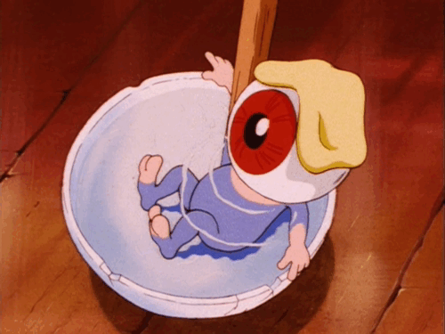

To-do and ideas
- CSS for dl/dt/dd [TOP PRIORITY]
- fix menu borders for mobile
- do smth about atabook. summary/description perhaps?
- update profile for spheredotorb stuff
- move gijinka gifts to 隔離
- travelogue 2025
theme revamp (use foollovers make from scratch?)- webrings page and/or possibly new section in creations
- website-making guides (ja+en, maybe prioritize ja bc there are a lot of en guides already)
- kirby game recs for beginners (
ja+en) - creations
- my art gallery ←hurry up on this
- shrines
- roommania#203
- kirby
- neocities version of columbo tit shrine
- tierlists?
- collections
- plushies
- rocks/minerals
- show off stuff my friends made me (earrings, charms, keychains, etc)(note to self make sure to ask personally)
- old art (artwiki favs and lecture notes)
- useful resources
- create guides?
- 3ds tool recommendations for beginners (like ftpd)
- fonts!
- game osts/music playlists
- particularly banger and obscure vocaloid
- annotated バカ通信 (reference explanation)
- script with a button that says [what day is it?] and returns "spinning him sunday" or smth when clicked
Stuff to fix
- revise NNN臨時放送 translation
- 隅々まで赤化（kb/magspeech, kb/wiidxwip）
